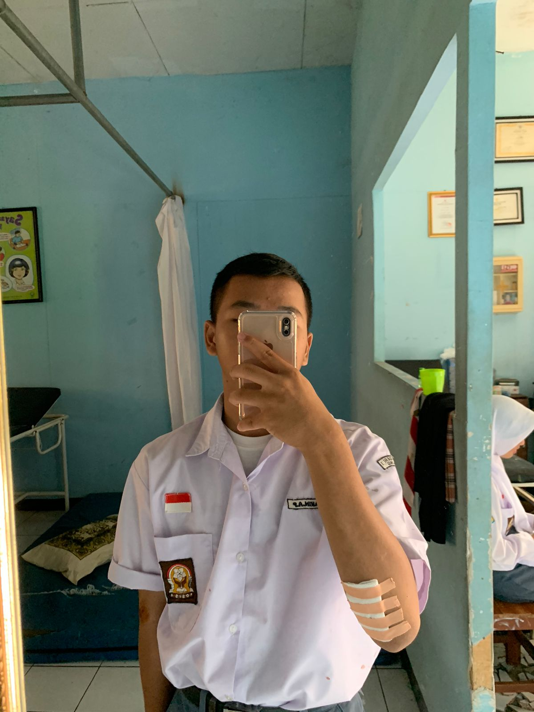

Muhamad Rahin Almassyah Putra
Manusia Biasa Aja
My Self
Pendidikan
Jurusan Rekayasa Perangkat Lunak
SMK Negeri 1 Subang
Angkatan 2022-2025
Pengalaman di Sekolah
Ekstrakulikuler
aktif dalam eskul Ambalan SMKN 1 subang (Pramuka Ambalan Tribuana Tungga Dewi - Niskala Wastu Kencana)
Kegiatan
Pernah ikut serta menjadi panitia mpls angkatan 2023 sebagai kakak pendamping
Pernah menjadi panitia PGP (Pengenalan Gerakan Pramuka) di ambalan SMKN 1 subang
Kemampuan
- Pengetahuan Kepramukaan
- Public Speaking
- Kerja sama atau komunikasi yang baik
- Memahami Microsoft Office
Kontak Informasi
- Email: Ratnarahin@gmail.com
- Phone: 0896-0436-1228
- Instagram: rhhhiin
- Alamat : jln ahmad yani gang tangkuban parahu Pasirkareumbi kec.subang kab.subang jawa barat